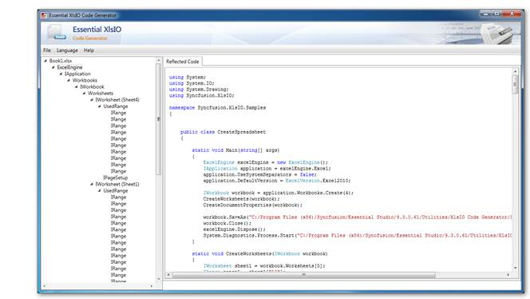

Reporting Edition provides the following add-ons:
· Document Explorer Utility
· Formula Validator
· XlsIO Code Generator
Document Explorer Utility
For details about Document Explorer utility, refer to Document Explorer.
Formula Validator
For details about Formula Validator, refer to Formula Validator.
XlsIO Code Generator
XlsIO Code Generator helps to generate the equivalent code using XlsIO API for the existing Excel documents that are generated using Essential XlsIO and MS Excel. The spreadsheets generated using the following MS Excel versions can be generated with code using XlsIO Code generator:
· Excel 97- 2003 workbook[xls]
· Excel Workbook[2007 & 2010][xlsx]
· Excel 97-2003 template[xlt]
· Excel Workbook template[xltx]
The code can be generated for C# and VB languages.

Figure 146: XlsIO Code Generator
Requirements
This utility requires Essential XlsIO WPF version installed in the machine to run.
Dependent assemblies are:
· Syncfusion.Compression.Base
· Syncfusion.XlsIO.Base
Usage
· Spreadsheet Viewer
To generate the code for an Excel file, click File->Open. The entire spreadsheet is now open and available for generating the code in the Code Viewer Tab.
· Spreadsheet Tree
The contents available in the spreadsheet will be split and converted to an equivalent code. These converted codes are then displayed in their hierarchy of implementation. By clicking on the particular node, the equivalent code will be generated and displayed in the Viewer tab.
· Language
The generated code can be viewed in either VB or C#, which can be selected from the Menu bar.
· Save
The generated code can be saved to the desired language by selecting the save option available under the file menu.